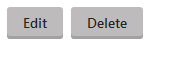

CMSEditModeButtonEditDelete
The CMSEditModeButtonEditDelete control displays a pair of buttons that allow content editors to edit or delete pages. The buttons only appear in the Edit mode of the Pages application and in On-site editing mode.
Tip: Many CMS listing controls (and web parts), such as the CMSRepeater (Repeater), have the ShowEditDeleteButtons (Show Edit and Delete buttons) property, which automatically adds the CMSEditModeButtonEditDelete control next to every displayed page. The system automatically sets the Path of these controls to match the displayed page.
Getting started
The following tutorial shows how to display a pair of buttons that edit or delete a specific news page:
Create a new ASPX page template.
In Visual Studio, drag the CMSEditModeButtonEditDelete control from the toolbox onto the page template's form.
Set the Path property of the control to: /News/New-Consulting-Services
<cms:CMSEditModeButtonEditDelete ID="CMSEditModeButtonEditDelete1"runat="server"Path="/News/New-Consulting-Services"/>Switch to the template's code behind and add using statements for the following namespaces:
usingCMS.PortalEngine;usingCMS.Helpers;usingCMS.DocumentEngine.Web.UI;usingCMS.Base.Web.UI;Add the following code to the Page_Load method:
// Registers the edit mode button scriptif(!PortalContext.ViewMode.IsLiveSite()){ScriptHelper.RegisterClientScriptBlock(this,typeof(string), ScriptHelper.EDIT_DOCUMENT_SCRIPT_KEY, CMSControlsHelper.EditDocumentScript);}The code above is required if you wish to use the control individually on an ASPX page template.
Create a page based on the template in the Kentico administration interface.
If you view the page in the Edit mode of the Pages application, the control displays a pair of buttons:

If you click the Edit button, the control redirects you to the editing form of the /News/New-Consulting-Services page. If you click Delete, the system deletes the given page.
Adding the control to transformations
You can add the CMSEditModeButtonEditDelete control into the code of ASCX transformations or Item templates.
<cms:CMSEditModeButtonEditDelete runat="server" id="btnEditDelete" Path='<%# Eval("NodeAliasPath") %>' />Alternatively, you can add the default version of the control to transformations through the following expression:
##editbuttons##Configuration
You can set the following properties for the CMSEditModeButtonEditDelete control:
|
Property name |
Description |
Sample value |
|
DeleteText |
Sets the caption of the delete button. If not set, the default text is "Delete". |
"Delete article" |
|
EditMode |
Determines which buttons the control displays. Possible options are both, just the Edit button, or just the Delete button. By default, both buttons are included. |
"Both" |
|
EditText |
Sets the caption of the edit button. If not set, the default text is "Edit". |
"Edit article" |
|
Path |
Path of the page that the control edits/deletes. |
"/whitepapers/myfirstpaper" |
Appearance and styling
The appearance of the CMSEditModeButtonEditDelete control is determined by the following CSS classes:
|
CSS class name |
Applies to |
|
CMSEditModeButtonEdit |
The edit button's <A> element. |
|
CMSEditModeButtonDelete |
The delete button's <A> element. |
The recommended place to define these classes is in a Kentico stylesheet using the CSS stylesheets application.
You can apply stylesheets to:
Entire websites
Individual pages that contain the control